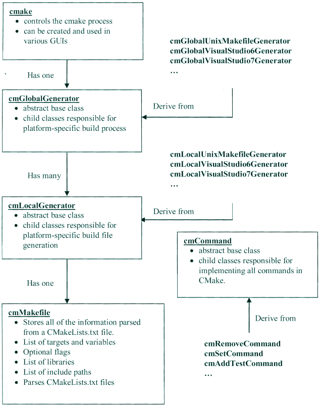

7.7.1. CMake简明
7.7.1.1. CMake简介
CMake是一个开源的可扩展工具，用于独立于编译器的管理构建过程。CMake必须和本地构建系统联合使用，在每个源码目录中需要编写CMakeLists.txt文件，以申明 如何生成标准的构建文件(如GNU Make的Makefile)
Cmake会生成一个方便用户编辑的缓存文件，当其运行时，会定位头文件、库文件、可执行文件，这些信息都会被收集到缓存文件中。
7.7.1.2. 核心理念
CMake包含一系列重要的概念抽象，包括目标(Targets)、生成器(Generators)、命令(Commands)等，这些命令均被实现为C++类。
下面列出这些概念之间的关系
源文件: 对应了典型的C/C++源码
目标: 多个源文件联合成为目标，目标通常为可执行文件或者库文件
目录：表示源码树中的一个目录，常常包含一个CMakeLists.txt文件，一个或者多个目标与之关联
本地生成器(Local generator): 每个目录有一个本地生成器，负责为此目录生成Makefiles,或者工程文件
全局生成器(Global generator): 所有本地生成共享一个全局生成器，后者负责监管构建过程，全局生成器由Cmake本身创建并驱动
CMake开始执行时，会创建一个cmake对象并把命令行参数传递给它，camke对象管理整体的配置过程，持有构建过程的全局信息(例如缓存值)。cmake会根据用户的选择来创建合适的全局 生成器(VS、Makefiles等)，并把构建过程的控制权转交给全局生成器(调用configure和generate方法)
下图显示cmake、生成器、cmMakefile、命令等类型的关系

7.7.1.2.1. 目标
cmMakefile对象存放的最重要的对象是目标(Targets),目标代表可执行文件，库、实用工具等。每个 add_library add_executable add_custom_target 命令都会创建一个目标
库目标
# 创建一个静态库，包含两个源文件
add_library(foo STATIC foo1.c foo2.c)
命令的第二个参数申明库的类型，有效值包括
库类型 |
说明 |
STATIC |
目标必须构建为静态库 |
SHARED |
目标必须构建为动态库 |
MODULE |
目标必须构建为支持在运行时动态加载到可执行文件中的模块 |
如果没有申明库类型，则CMake依据变量 BUILD_SHARED_LIBS 判断应该构建为共享库还是静态库，如果此变量不设置构建为静态库
可执行目标
# 创建可执行文件
add_exectable(foo foo.c)
读写目标属性
使用 set_target_properties get_target_properties 或者更通用的 set_property get_property 命令，可以读写目标的属性
# 修改目标使用的文件目录，注意，全局的include_directories会将此目标忽略
set_property(TARGET jsonrpc
PROPERTY INCLUDE_DIRECTORIES
${JSONCPP_INCLUDE_DIRS}
${BOOST_INCLUDE_DIRS}
${CMAKE_CURRENT_SOURCE_DIR}
${CMAKE_CURRENT_SOURCE_DIR}/jsonrpc
)
# 同时设置多个属性
set_target_properties(jsonrpc PROPERTIES VERSION ${PROJECT_VERSION} SOVERSION ${PROJECT_VERSION_MAJOR})
常见目标属性如下
属性 |
说明 |
LINK_FLAGS |
传递给链接器的标志 |
COMPILE_FLAGS |
传递给编译器的标志 |
INCLUDE_DIRECTORIES |
指定目标需要引用的头文件目录 |
PUBLIC_HEADER |
共享的库目标提供的公共头文件 |
VERSION |
构建版本 |
SOVERSION |
API版本 |
OUTPUT_NAME |
目标输出文件名称 |
全部目标属性可以查阅官网 https://cmake.org/cmake/help/v3.0/manual/cmake-properties.7.html#properties-on-targets
链接到库
使用 target_link_libraries 命令，可以指定目标需要链接的库的列表。列表的元素可以是库、库的全路径
add_library(foo foo.cpp)
# foo库依赖bar库
target_link_libraries(foo bar)
add_executable(foobar foobar.cpp)
# foobar显式依赖foo，隐式依赖bar
target_link_libraries(foobar foo)
7.7.1.2.2. 源文件
与Target类似，源文件也被建模为C++类，也支持读写属性(通过set_source_files_properties、get_source_files_properties或更一般的命令)
属性 |
说明 |
COMPILE_FLAGS |
针对特定源文件的编译器标志，可以包含-D、-I之类的标志 |
GENERATED |
指示此文件是否在构建过程中生成，这种文件在CMake首次运行时不存在，因而计算依赖关系时考虑 |
OBJECT_DEPENDS |
添加此源文件时额外依赖的其他文件 |
7.7.1.2.3. 目录、生成器、测试、属性
其他偶尔可能用到的CMake类型包括Directory、Generator、Test、Property等。
属性是一种键值存储，它关联到一个对象。读写属性最一般的方法是上面提到的get/set_property命令。所有可用的属性可以通过 cmake -help-property-list 得到
7.7.1.2.4. 变量和缓存条目
CMakeLists中的变量和普通编程语言中的变量很类似，变量的值要么是单个值，要么是列表。引用变量必须使用 ${VARNAME} 语法，要设置变量的值需要使用set命令。
变量对当前的CMakeLists文件、当前函数、以及子目录的CMakeLists、任何通过INCLUDE包含进来的文件、任何调用的宏或函数可见。
当处理一个子目录、调用一个函数时，CMake创建一个新的作用域，其复制当前作用域全部变量。在子作用域中对变量的修改不会对父作用域产生影响。要修改父作用域中的变量， 可以在set时指定特殊选项。
set(name Alex PARENT_SCOPE)
常用变量如下表
变量 |
说明 |
CMAKE_C_FLAGS |
C编译标志，示例 set(CMAKE_C_FLAGS “-std=c11 -pthread”) |
CMAKE_CXX_FLAGS |
C++编译标志 |
CMAKE_C_FLAGS_DEBUG |
用于Debug配置的C编译标记，示例 set(CMAKE_C_FLAGS_DEBUG “-g -O0”) |
CMAKE_CXX_FLAGS_DEBUG |
C++ Debug编译标志 |
CMAKE_C_FLAGS_RELEASE |
|
CMAKE_CXX_FLAGS_RELEASE |
option 命令可以创建一个Boolean变量(ON/OFF)并将其存储在缓存中
option(USE_PNG "Do you want to use the png library?")
7.7.1.2.5. 构建配置
构建配置运行工程使用不同方式构建:debug、optimized或任何其他标记。CMake默认支持四种构建配置
构建配置 |
说明 |
Debug |
启用基本的调试(编译器的)标志 |
Release |
基本的优化配置 |
MinSizeRei |
生成最小的，但不一定是最快的代码 |
RelWithDebugInfo |
优化构建，但同时携带调试信息 |
可以使用 CMAKE_BUILD_TYPE 变量指定目标配置
cmake ../ -DCMAKE_BUILD_TYPE=Debug
7.7.1.3. 编写CMakeLists文件
CMake由CMakeLists.txt驱动，此文件包含构建需要的一些信息。
7.7.1.3.1. 基本命令
命令 |
说明 |
project |
顶层CMakeLists.txt应该包含的第一个命令，声明工程名字和使用的语言 |
set |
设置变量或者列表 |
remove |
从变量值的列表中移除一个单值 |
separate_arguments |
基于空格，把单个字符串分割为列表 |
add_executable |
定义目标(可执行文件) |
add_library |
定义目标(库) |
7.7.1.3.2. 流程控制命令
和普通编程语言一样，CMake支持条件、循环控制结构，同时支持子过程(macro、function)
if-else条件控制
if(MSVC80)
#...
elseif(MSVC90)
#...
elseif(APPLE)
#...
endif()
条件表达式
语法 |
说明 |
if(variable) |
0 FALSE OFF NO NOTFOUND *-NOTFOUNR IGNORE为假，其他为真。不区分大小写。 |
if(NOT variable) |
上面取反，variable可以不用$包围 |
if(variable AND variable1) |
逻辑与 |
if(varibale1 OR variable2) |
逻辑或 |
if(num1 EQUAL num2) |
数字相等比较(其他操作符包括LESS、GREATER) |
if(str1 STREQUAL str2) |
字典序相等比较(其他类似的还有STRLESS STRGREATER) |
if(v1 VERSION_EQUAL v2) |
major[.minor[.patch[.tweak]]]风格版本号相等比较 |
if(COMMAND cmd_name) |
如果指定的命令可以调用 |
if(DEFINED variable) |
如果变量被定义 |
if(EXISTS filename) |
如果文件存在 |
if(IS_DIRECTORY name) |
判断是否为目录 |
if(IS_ABSOLUTE name) |
判断是否为绝对路径 |
if(n1 IS_NEWER_TAN n2) |
判断文件n1的修改时间是否大于n2 |
if(variable MATCHES regex) |
变量匹配，支持正则表达 |
操作符优先级
括号分组()
前缀一元操作符: EXISTS、COMMAND、DEFINED
比较操作符: EQUAL、LESS、GREATER以及其变体，MATCHES
逻辑非: NOT
5) 逻辑或与: AND OR2) 前缀一元操作符: EXISTS、COMMAND、DEFINED 3) 比较操作符: EQUAL、LESS、GREATER以及其变体，MATCHES 4) 逻辑非: NOT 5) 逻辑或与: AND OR
foreach
foreach(item list)
# do something with item
endforeach(item)
while
while(${COUNT} LESS 2000)
set(TASK_COUNT, ${COUNT})
endwhile()
break
此命令用于中断foreach/while循环
function
CMake中的函数类似C/C++函数，可以向函数传递参数，除了依据行参名外，你还可以使用ARGC，ARGV，ARGN，ARG0， ARG1…等形式. 函数内部是一个新的作用域。
function(println msg)
message(${msg} "\n")
set(msg ${msg} PARTENT_SCOPE)
endfunction()
println(Hello)
return
此命令用于从函数中返回。
macro
宏域函数类似，但宏不会创建新的作用域。传递给宏的参数也不会被作为变量看待，而是执行宏替换为字符串
macro(println msg)
message(${msg} "\n")
endmacro()
7.7.1.4. 检查CMake版本
if(${CMAKE_VERSION} VERSION_GREATER 1.6.1)
endif()
# 还可以申明要求的CMake最低版本
cmake_minimum_required(VERSION 2.8)
7.7.1.5. 使用模块
所谓模块，仅仅是存放到一个文件中一系列CMake命令的集合。我们可以用include命令包含到CMakeLists.txt中
# 此模块用于查找TCL库
include(FindTCL)
#找到后，将其加入到链接依赖中
target_link_libraries(FOO ${TCL_LIBRARY})
包含一个模块时，可以使用绝对路径，或者是基于 CMAKE_MODULE_PATH 的相对路径，如果此变量未设置，默认为CMake的安装目录的Modules子目录
模块依据用途可以分为
查找类模块: 查找软件元素，例如头文件、库
# png库依赖zlib库
include(FindZLIB) #查找zlib库
if(ZLIB_FOUND) #往往在找到后设置LIBNAME_FOUND变量
#查找头文件位置并存入变量
find_path(PNG_PNG_INCLUDE_DIR png.h /usr/local/include /usr/include)
#查找库文件位置并存入变量
find_library(PNG_LIBRARY png /usr/lib /usr/local/lib)
if(PNG_LIBRARY AND PNG_PNG_INCLUDE_DIR)
set(PNG_INCLUDE_DIR ${PNG_PNG_INCLUDE_DIR} ${ZLIB_INCLUDE_DIR})
set(PNG_LIBRARIES ${PNG_LIBRARY} ${ZLIB_LIBRARY})
set(PNG_FOUND TRUE)
endif()
endif()
系统探测模块: 探测系统的特性，例如浮点数长度、对ASCI C++11的支持
实用工具模块: 用于添加额外的功能，例如处理一个CMake工程依赖于其他CMake工程的情况
7.7.1.6. 安装文件
软件通常被安装到和源码、构建树无关的位置上，CMake提供一个 install 命令，来说明一个工程如何被安装。 执行 make install 即可完成安装
install命令提供了若干”签名”(类似于子命令)，签名作为第一个参数传入。可用的签名包括
签名 |
说明 |
install(TARGETS…) |
安装工程中目标对应的二进制文件 |
install(FILES…) |
一般性的文件安装，包括头文件、文档、软件需要的数据文件 |
install(PROGRAMS…) |
安装不是当前工程构建的文件，例如shell脚本，与FILES类似，只不过PROGRAMS被授予可执行权限 |
install(DIRECTORY…) |
安装一个完整的目录树 |
install(SCRIPT…) |
指定一个用户提供的、在安装过程中执行的CMake脚本 |
install(CODE…) |
与SCRIPT类似，只是脚本以内联字符串形式提供 |
TARGETS签名
install(TARGETS
targets... #基于add_executable/add_library创建的目标列表
#通过TARGETS签名安装的文件可以分为三类
# ARCHIVE 静态库， LIBRARY 可加载模块、动态库， RUNTIME可执行文件
[ARCHIVE|LIBRARY|RUNTIME|FRAMEWORK|BUNDLE|PRIVATE_HEADER|PUBLIC_HEADER|RESOURCE]
[DESTINATION <dir>]
[PERMISSIONS permissions...]
[CONFIGURATIONS [Debug|Release|...]]
[COMPENT compent]
[OPTIONAL]
[EXPORT <export name>]
)
示例
install(TARGETS myExecutable mySharelib myStaticlib myPlugin
RUNTIME DESTINATION bin COMPENT Runtime
LIBRARY DESTINATION lib COMPENT Runtime
ARCHIVE DESTINATION lib/myproject COMPENT Development
)
FILES签名
install(FILES files.. #需要被安装的文件的列表，如果是相对路径，相对于当前Source目录
DESTINATION <dir> #目标位置，如果是相对路径，相对于安装Prefix
[PERMISSIONS permissions...] #默认权限644
[CONFIGURATIONS [Debug|Release|...]]
[COMPENT compent]
[RENAME <name>] #为文件指定新的名称，要求文件列表只有一个元素
[OPTIONAL]
)
PROGRAMS签名
安装shell脚本或者python脚本时，可以使用PROGRAMS签名，此签名和PROGRAMS一样，只是默认权限为755
DIRECTORY签名
安装整个目录时，需要使用DIRECTORY签名
install(DIRECTORY dir... #需要被安装的目录的列表，如果是相对路径，相对于source目录
DESTINATION <dir> #安装目录
[FILE_PERMISSIONS permissions...] #文件默认权限644,目录默认权限755
[DIRECTORIES_PERMISSIONS permissions...]
[USR_SOURCE_PERMISSIONS] #和文件源保持同样的权限
[CONFIGURATIONS [Debug|Release|...]]
[COMPONENT component]
[
#排除某些文件，或者为某些文件指定特殊的权限
#PATTERN用于unxi风格通配符匹配，REGEX用于正则式匹配
[PATTERN <pattern> | REGEX <regex>]
[EXCLUDE] #是否把匹配的文件排除，不安装
[PERMISSIONS permissions...] #设置匹配文件的权限
]
)
7.7.1.7. 系统探测
系统探测，即检测在其上构建的系统的各种环境信息，是构建跨平台库或者应用程序的关键因素。
7.7.1.7.1. 使用头文件和库
与集成外部库相关的命令包括 find_library 、 find_path 、 find_program 、 find_package 。对于大部分C/C++库，使用前两个命令一般足够和
系统上已经安装的库进行链接，这两个命令分别用来定位库文件、头文件所在目录
#寻找一个库
find_library(
TIFF_LIBRARY
NAME tiff tiff2 #只需要库的basename
PATHS /usr/local/lib /usr/lib #搜索库路径，前面的优先
)
#查找一般性的文件，仅支持一个待查找文件，支持多个路径
find_path(
TIFF_INCLUDES
tiff.h
/usr/local/include /usr/include
)
include_directories(${TIFF_INCLUDES})
add_executable(mytiff mytiff.c)
target_link_libraries(mytiff ${TIFF_LIBRARY})
备注
find_*命令总是会查找PATH环境变量，find_*命令会自动创建对应的缓存条目
7.7.1.7.2. 查找包
CMake提供 find_package(Package [version]) 命令来查找符合package包规则的软件包。
该命令可以在两个模式下运行：
Module模式: 此模式下CMake会依次扫描
CMAKE_MODULE_PATH、CMake安装目录，尝试寻找一个名称为Find<Package>.cmake的查找模块。如果找到则加载，并调用其来寻找目标包的全部组件- Config模式: 如果Module模式下没有定位到查找模块，命令自动切换到Config模式。该模式下，命令会寻找包配置文件(package configuration file):目标包提供的、一个名为<Package>Config[Version].cmake
或者<package>-config[-version].cmake的文件。只要给出包的名称，命令就知道从何处寻找包配置文件，可能的位置是<prefix>/lib/<package>/<package>-config.cmake
内置查找模块
CMake的内置查找模块，在找到包后，一般会定义一系列的变量供当前工程使用
变量名称约定 |
说明 |
<PKG>_INCLUDE_DIRS |
包的头文件所在目录 |
<PKG>_LIBRARIES |
包提供的库的完整路径 |
<PKG>_DEFINITIONS |
使用包时，编译代码需要用的宏定义 |
<PKG>_EXECUTABLE |
包提供的PKG工具所在目录 |
<PKG>_ROOT_DIR |
PKG包的安装根目录 |
<PKG>_VERSION_<VER> |
如果PKG的VER版本被找到则定义为真 |
<PKG>_<CMP>_FOUND |
如果PKG的CMP组件被找到，则定义为真 |
<PKG>_FOUND |
如果PKG被找到则定义为真 |
7.7.1.7.3. 为编译传递参数
要传递参数给编译器，可以指定命令行，或者使用一个预先配置好的头文件。
调用 add_definitions 命令，可以向编译器传递宏定义
#定义一个布尔的缓存条目
option(DEBUG_BUILD "Enable debug messages")
if(DEBUG_BUILD)
#添加宏定义
add_definitions(-DDEBUG_MSG)
endif()
配置头文件
这种方式更可维护，大部分工程应当使用该方式，应用程序只需要引入预先配置好的头文件即可，不必编写复杂的CMake规则。我们可以把头文件看作一种配置文件
7.7.1.8. 定制命令与目标
7.7.1.8.1. 可移植性
CMake提供了两个主要工具，解决不同平台之间的可移植性问题。
cmake -E
使用 cmake -E arguments 调用，可以执行一些跨平台的操作。支持的argument包括
操作 |
说明 |
chdir dir command args |
改变当前目录为dir然后执行指定的命令 |
copy file destination |
拷贝文件 |
copy_if_different infile outfile |
如果两个文件不一样，则从infile拷贝到outfile |
copy_directory source destination |
拷贝目录，包括子目录 |
remove file file1… |
删除文件 |
echo string |
打印到标准输出 |
time command args |
运行一个命令并计算耗时 |
CMake不限制仅使用cmake命令，事实上可以调用任何命令。一个通用的实践是，通过 find_program 先找到一个程序，然后在定制命令中调用之
系统特征变量
变量 |
说明 |
EXE_EXTENSION |
可执行文件的扩展名，Windows为.exe ,UNIX为空 |
CMAKE_CURRENT_BINARY_DIR |
与当前CMakeLists文件关联的输出目录的完整路径 |
CMAKE_CURRENT_SOURCE_DIR |
与当前CMakeLists文件关联的源码目录的完整路径 |
EXECUTABLE_OUTPUT_PATH |
可执行文件路径 |
LIBRARY_OUTPUT_PATH |
库文件需要生成的目录 |
CMAKE_SHARED_LIBRARY_PREFIX |
共享库文件前缀 |
CMAKE_SHARED_LIBRARY_SUFFIX |
共享库文件后缀 |
CMAKE_LIBRARY_PREFIX |
静态库文件前缀 |
CMAKE_LIBRARY_SUFFIX |
静态库文件后缀 |
CMAKE_SHARED_MODULE_PREFIX |
共享模块文件前缀 |
CMAKE_SHARED_MODULE_SUFFIX |
共享模块文件后缀 |
7.7.1.8.2. 定制命令与目标
add_custom_command
add_custom_command有两个主要的签名: TARGET、OUTPUT，分别用于目标或者文件添加额外的规则。
add_custom_command(
TARGET target #目标名称
#执行触发时机
#pre_build,在目标的任何依赖文件被构建之前运行
#pre_link,在所有依赖已经构建好，但是尚未链接时执行
#post_build，在目标已经构建好后执行
PRE_BUILD | PRE_LINK | POST_BUILD
# command为可执行文件的名称
COMMAND command [ARGS arg1 arg2 ...]
[COMMAND command [ARGS arg1 arg2 ...]]
#注释，在定制命令运行时打印
[COMMENT comment]
)
示例
#在目标构建好之后拷贝
add_executable(myProgram myProgram.c)
get_target_property(EXE_LOC myProgram LOCATION)
add_custom_command(
TARGET myProgram
POST_BUILD
COMMAND ${CMAKE_COMMAND} ARGS -E copy ${EXE_LOC} output/file
)
add_custon_command的另外一个用途是指定生成一个文件的规则。
add_custom_command(
#指定命令运行生成的结果文件，最好指定完整路径
OUTPUT output1 [output2 ...]
#需要执行的命令
COMMAND command [ARGS [args ...]]
#命令依赖的文件
[DEPENDS [depends ...]]
[COMMENT commnet]
)
add_custom_target
add_custom_target(
#name为目标的名称，使用make name生成此目标
name [ALL] #ALL表示目标包含在ALL_BUILD目标中，自动构建
#执行的命令
[command arg arg ...]
#此目标依赖的文件列表
[DEPENDS dep1 dep2 ...]
)
7.7.1.9. CMake交叉编译
工具链文件
通过一个所谓工具链(ToolChain)文件，可以向CMake传递目标平台的任何必要信息
cmake -DCMAKE_TOOLCHAIN_FILE=config/toolchain.cmake ..
工具链文件变量
变量 |
说明 |
CMAKE_SYSTEM_NAME |
该变量必须设置，指定目标平台的名称。Linux Windows Generic(嵌入式无OS). 设置此变量后，CMAKE_CROSSCOMPILING为真 |
CMAKE_SYSTEM_VERSION |
可选，目标平台版本 |
CMAKE_SYSTEM_PROCESSOR |
可选，目标平台处理器或者硬件的名称 |
CMAKE_C_COMPILER |
C编译器完整路径或者名字 |
CMAKE_CXX_COMPILER |
C++编译器名字 |
CMAKE_FIND_ROOT_PATH |
指定一组包含了目标平台环境的目录，这些目录供所有的find_*命令使用 |
CMAKE_FIND_ROOT_PATH_MODE_PROGRAM |
find_program命令默认行为，NEVER对CMAKE_FIND_ROOT_PATH目录无效，ONLY仅目录中搜索，BOTH是默认值，都搜索 |
CMAKE_FIND_ROOT_PATH_MODE_LIBRARY |
find_library行为 |
CMAKE_FIND_ROOT_PATH_MODE_INCLUDE |
find_include行为 |
示例
# Supported Values: Linux, QNX, Android, Window, Generic(For Embedded system)
set(CMAKE_SYSTEM_NAME Linux)
set(CMAKE_SYSTEM_PROCESSOR aarch64-poky)
if(${CMAKE_VERSION} VERSION_GREATER 3.7.0)
set(FLAGS_SUFFIX _INIT) # 3.7.x introduced new _INIT variables for toolchainfile flags
else()
set(FLAGS_SUFFIX)
endif()
set(BUILD_PLATFORM "v3h_aarch64")
# Set cross compiler tool path
if(ENV{CROSS_TOOL_CHAIN_PATH})
set(CROSS_TOOLCHAIN_ROOT_PATH $ENV{CROSS_TOOL_CHAIN_PATH})
else()
set(CROSS_TOOLCHAIN_ROOT_PATH /opt/poky/3.0.2/sysroots)
endif()
set(CMAKE_SYSROOT ${CROSS_TOOLCHAIN_ROOT_PATH}/aarch64-poky-linux)
set(CMAKE_FIND_ROOT_PATH ${CMAKE_SYSROOT})
set(TOOLCHAIN_PATH ${CROSS_TOOLCHAIN_ROOT_PATH}/x86_64-pokysdk-linux/usr/bin/aarch64-poky-linux)
message(STATUS "TOOLCHAIN_PATH = ${TOOLCHAIN_PATH}")
find_program(CMAKE_C_COMPILER NAMES "aarch64-poky-linux-gcc" PATHS ${TOOLCHAIN_PATH})
find_program(CMAKE_CXX_COMPILER NAMES "aarch64-poky-linux-g++" PATHS ${TOOLCHAIN_PATH})
find_program(CMAKE_ASM_COMPILER NAMES "aarch64-poky-linux-gcc" PATHS ${TOOLCHAIN_PATH})
find_program(CMAKE_RANLIB NAMES "aarch64-poky-linux-ranlib" PATHS ${TOOLCHAIN_PATH})
find_program(CMAKE_AR NAMES "aarch64-poky-linux-ar" PATHS ${TOOLCHAIN_PATH})
find_program(CMAKE_AS NAMES "aarch64-poky-linux-as" PATHS ${TOOLCHAIN_PATH})
find_program(CMAKE_LD NAMES "aarch64-poky-linux-ld" PATHS ${TOOLCHAIN_PATH})
find_program(CMAKE_NM NAMES "aarch64-poky-linux-nm" PATHS ${TOOLCHAIN_PATH})
find_program(CMAKE_GDB NAMES "aarch64-poky-linux-gdb" PATHS ${TOOLCHAIN_PATH})
find_program(CMAKE_STRIP NAMES "aarch64-poky-linux-strip" PATHS ${TOOLCHAIN_PATH})
find_program(CMAKE_GDB NAMES "aarch64-poky-linux-gdb" PATHS ${TOOLCHAIN_PATH})
find_program(CMAKE_OBJCOPY NAMES "aarch64-poky-linux-objcopy" PATHS ${TOOLCHAIN_PATH})
find_program(CMAKE_OBJDUMP NAMES "aarch64-poky-linux-objdump" PATHS ${TOOLCHAIN_PATH})
message(STATUS "CMAKE_C_COMPILER = ${CMAKE_C_COMPILER}")
message(STATUS "CMAKE_CXX_COMPILER = ${CMAKE_CXX_COMPILER}")
message(STATUS "CMAKE_ASM_COMPILER = ${CMAKE_ASM_COMPILER}")
if(NOT CMAKE_C_COMPILER)
message(FATAL_ERROR "CMAKE_C_COMPILER not found")
endif()
if(NOT CMAKE_CXX_COMPILER)
message(FATAL_ERROR "CMAKE_CXX_COMPILER not found")
endif()
if(NOT CMAKE_ASM_COMPILER)
message(FATAL_ERROR "CMAKE_ASM_COMPILER not found")
endif()
if(NOT CMAKE_AR)
message(FATAL_ERROR "CMAKE_AR not found")
endif()
set(CMAKE_SYSROOT ${CMAKE_FIND_ROOT_PATH})
set(CMAKE_FIND_ROOT_PATH_MODE_PROGRAM NEVER)
set(CMAKE_ASM_FLAGS${FLAGS_SUFFIX} "--sysroot=${CMAKE_FIND_ROOT_PATH}")
set(CMAKE_C_COMPILER_TARGET aarch64-poky-linux)
set(CMAKE_C_FLAGS${FLAGS_SUFFIX} "--sysroot=${CMAKE_FIND_ROOT_PATH}")
set(CMAKE_CXX_COMPILER_TARGET aarch64-poky-linux)
set(CMAKE_CXX_FLAGS${FLAGS_SUFFIX} "--sysroot=${CMAKE_FIND_ROOT_PATH}")
set(CMAKE_EXE_LINKER_FLAGS${FLAGS_SUFFIX} "--sysroot=${CMAKE_FIND_ROOT_PATH}")
message(STATUS "cross tool chain is configure")